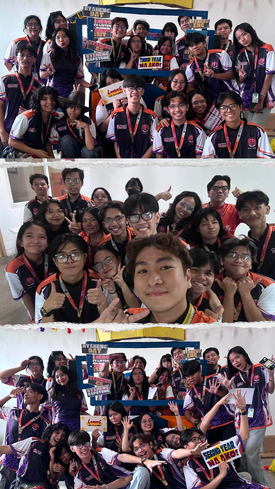

🥀


A letter for you
From: Yours truly
For sir Migs,
I dont think youre a fan of letters, pero wala kang choice kundi basahin toh
At first i saw you as a person na d ko magiging kaclose on a certain level, you have this unimaginable sassyness at first glance na nakakaoverwhelm to the point na nakakatakut kang iapproach WHAHA but as the days go by lagi na kitang nakakainteract, and that's what makes me realize na part ng aura/estetik mo pala un. D man tayo matagal na nagkakilala but you already left an impact on me, from the moment you pushed us na sumali sa PGDX 2026 was the turning point, i saw how dedicated and supportive you are to your students actually kahit d mo studyante, basta kakilala mo, you have supported us so unconditionally, kahit na ikaw ung napapagod but you did it just for your students.
You always kept that standard high with the belief na kaya pa naming angatan ung na-i-set mong standard, and of course that what pushes us through to improve our outputs, parang like ikaw ung nagcacarve sa mga "diamonds in the rough students" and in order for that diamond to appear you have to put a pressure on it, and thats basically what you do
Lagi mo tong sinasabe sakin and yes i totally agreed with you na napaka free ng mga students kapag ikaw ung prof compared to other faculties, d na namin nararanasan na sapilitan ang open cam during classes, strict examinations, and such. Actually parang pinapadali mo na lng buhay studyante namin eh and im so grateful for that (shempre tamad na yan sia ih)
Sa IMAGES naman, ive said it and i will say it again na youre the most dedicated adviser to ever set foot on the org, i admired your consistency even amidst of chaos or kahit pagod kana. Idk if you remembered na sinabe ko dati na i would totally leave the org if d na si sir nath adviser next term, and guess what tama lng ung desisyon kong magstay pa as your secre. Ikaw ang naging glue ng org, all of the achievements ng org now (at sa mga future awards) is nothing without your guidance. I would also like to say sorry to have the thought of leaving the org (pero pinagiisipan ko parin din sya) with your encouragement i feel so grateful for that and that stuff holds a special place on my heart (heart? Si OA)
As one of your students, I've learned so many things from you not just academically, but also as a person of standards. Dala dala ko parin ung mga comments mo nun about pitching nung 2nd year pako, looking back at it, it was such an amazing opportunity to have you judge my work entirely, kasi d ka nagiging bias, and youre brutally honest in this world full of people pleasing. I'm also glad that i got to talk to you about sa dialect cafe simulation na game, from that ive improved my ways of thinking para ma-bring to existence ung idea na un in a way na d ko sya i-re-regret.
So may gift tlga ako for you pero d tlga sya abot today WHAHA (sorry na tlga🥀) but then naalala ko din na u wanted this nung nag PGDX tayo (i never thought youre a fan of the Nightmare before Christmas) pero yeah i would like to give this to you too (follow up ko na lng ung isa pang gift) kasi with that gift (ung real) i would like to express to you how much i am grateful to have met you as a prof and as a person, to also got to know you behind academics and all. I have never imagined in a thousand years na magiging close tlga kita legit lng. So I'm always at your service sir, if u ever need anything, need ng chika, ng tulong over something o kahit ano payan nandito lng ems lagi kahit org matters or not or kahit taga baba lng ng iyong stress level WHAHA. Lastly i wanted to say these "thank you" of mine to you.
Thank you for being the pillar of IMAGES (Le is git lng kaproud kayu sir)
Thank you for being my chika buddy WHAHAH, ang sarap tlga mag spill ng chika sayo, umiinit lalo eh 😭
Thank you for giving us the confidence to stand our ground and to have a voice of opinion (na may sense)
Thank you for everything that you've done until now, you're one of the most extraordinary prof (Ayiee kilig na yan sia)
Happy Teachers Day, Sir Miguel!!
P.s meron din naman palang ganda ang buhay, pede nang mangarap 🎶 ✨
SIZAA